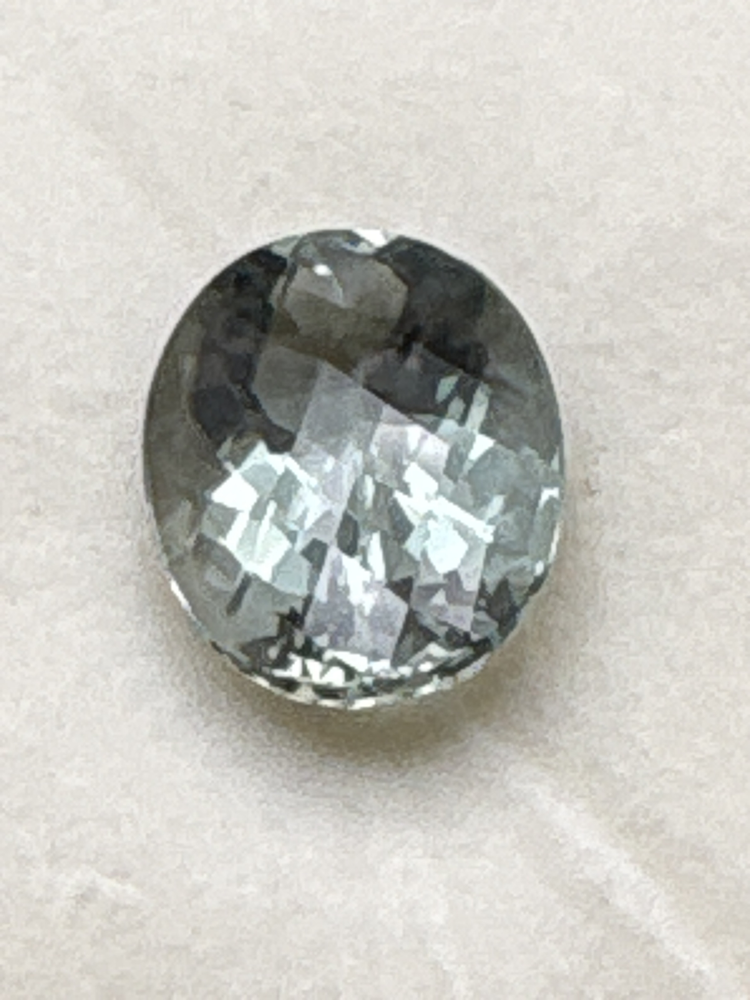

The Gem Drawer › No. 44

One of the largest stones here: a pale seafoam beryl in a checkerboard cut.
| Catalogue no. | #44 |
|---|---|
| As labeled | Beryl (labeled "Reisling Beryl" - trade name for pale green/greenish-yellow beryl, see notes) |
| Shape / cut | Oval, checkerboard cut |
| Weight | 11.47 ct |
| Measurements | Not recorded |
| Colour | Pale grayish-green (seafoam/blue-green under some lighting) |
| Clarity / condition | Not recorded |